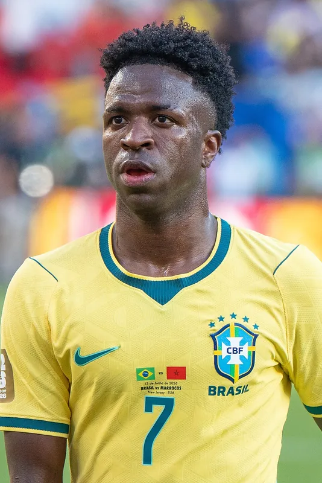

¿Como comezar a xogar?
Para empezar debes de comprar o xogo e un aparrello para xogar, pode ser tanto PC, Play5/Play4 Xbox etc. unha vez temos estos requisitos recomendo entrar directamente no modo online do xogo este modo chámase ultimate team, neste modo crearas o teu propio equipo en base a os xogadores que che toquen dentro do propio xogo. Para empezar tamén é moi recomendable que lle votedes un ollo ao apartado de DCP onde poderas cconseguir sobres e xogadores para o teu equipo
¿Por que paga a pena?
- Faite pasar un bo rato ademáis de axudarte a pasar o día mais rápido e non pensar noutras cousas
- Axudate moito nos reflexos e as respodtas rápidas, algo importantisimo para o exame práctico de conducir
- Podes xogar coas túas amizades sempre que teñan o xogo comprado, se non sempre queda a opción de xogar todos nunha memsa consola
Para mellorar dentro do ultimate team
A web de Este video é bo para comezar a xogar e analizar os errores que podes ter, o seu creador é AndoniPM
